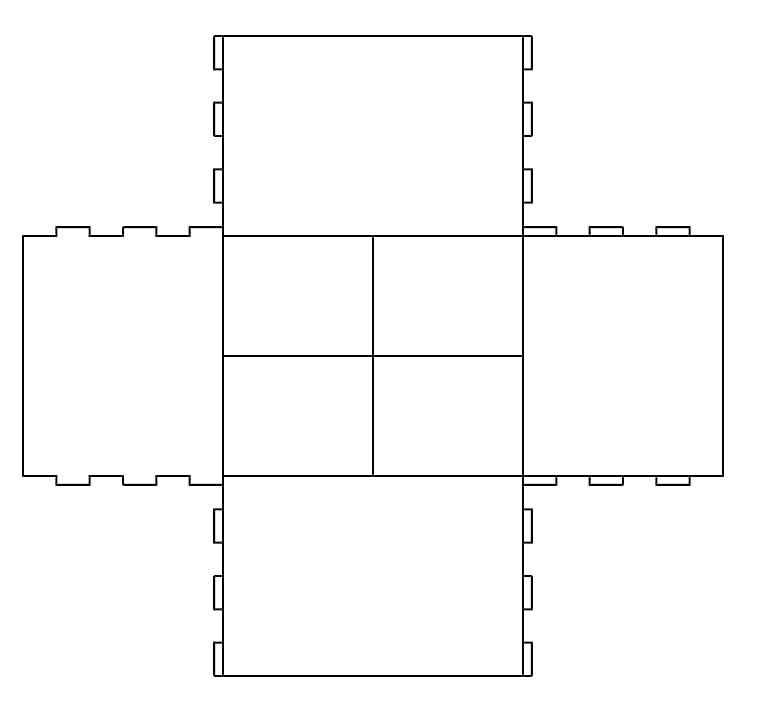
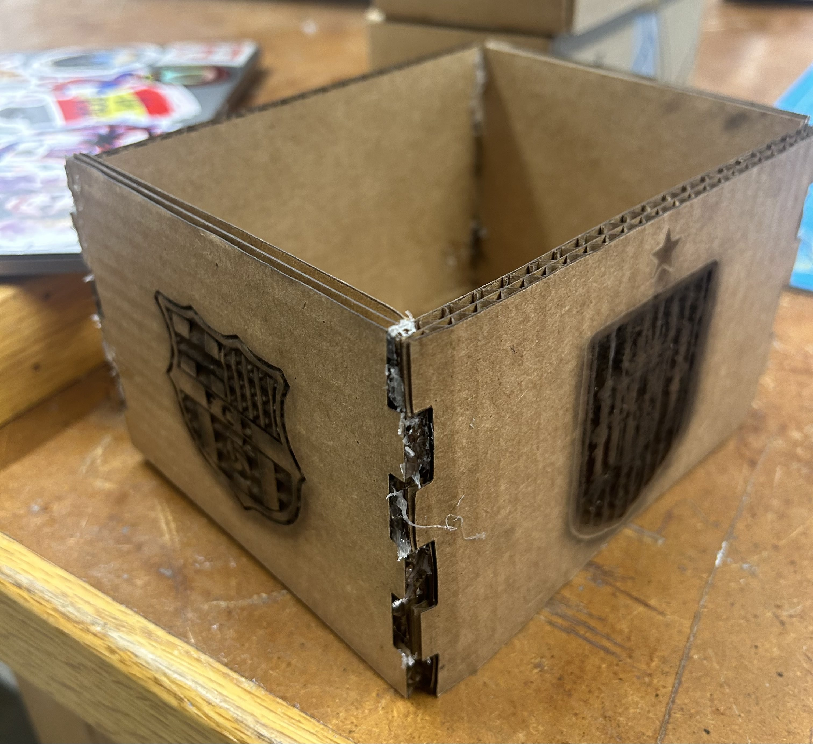
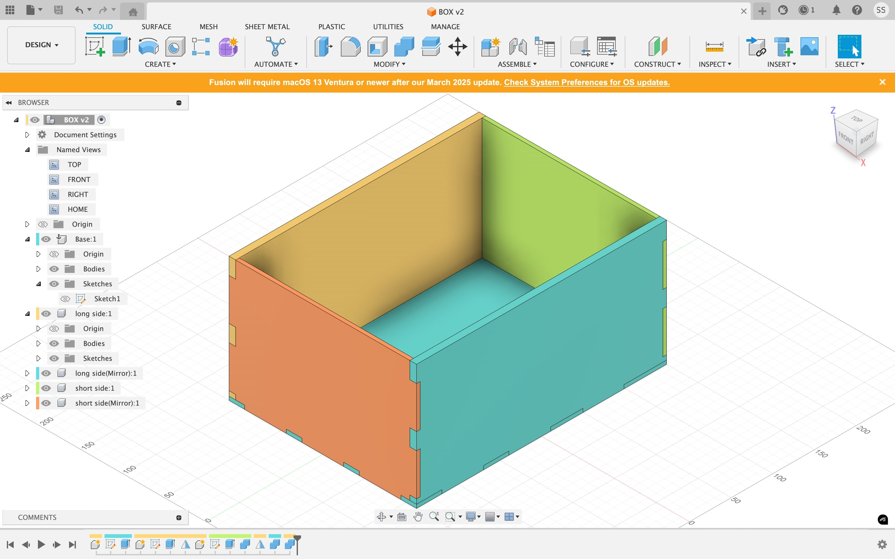
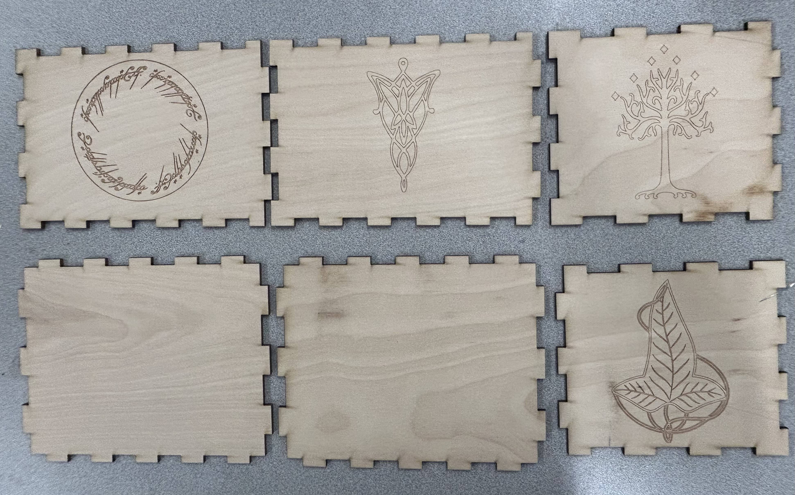

Week 2: 2D Design & Cutting
Assignment 1: Make a Box
The objective of this week was to acquire practice with 3D modeling on Fusion and get introduced to laser cutting. This is the first time I am learning 3D modeling or laser cutting and so I experienced difficulties creating my box. However, over the course of the semester, I am going to continue creating new iterations and improving the design for my own learning and benefit.
To create my box, I followed Nathan’s finger box demo. I wanted to keep the design simple so that I could practice executing engravings on the laser cutter. My box consisted of 3 fingers to snap it into place. After sketching the 2D flattened schematic of the box, I increased the parameters to size my box up from around the 30 - 50 mm range to the 200 - 500 mm range.
I wanted to practice executing engravings on the laser cutter. I first started with four arbitrary images of soccer players that I wanted to engrave on each wall of the box. However, engraving these images proved difficult because they had corrupting features in their backgrounds and the laser cutter could not read the lines accurately. Consequently, I tried to find simpler images for the laser cutter to read and settled on a Barcelona and Spain logo, my favorite club and international soccer teams, to be engraved into each of the two sides.
I began by editing the images in Inkscape, converting them to grayscale and removing the backgrounds to prepare them for laser engraving. After importing the images into Rhino, I proceeded with my first few cuts. However, these initial attempts resulted in engravings that were too deep, producing a burnt, uneven texture, which wasn’t the desired effect.
To address this issue, I adjusted the power parameter on the laser cutter, lowering it to prevent such deep cuts. This helped improve the precision of the engravings. For instance, when I engraved the FC Barcelona logo, the final result was much better—shallow enough to maintain the detail without over-burning the surface. However, the engraving of the Spain logo still presented challenges. Despite my adjustments, the logo appeared slightly charred, especially around areas with finer details.
From this experience, I learned that highly detailed images, like the Spain logo, are more prone to burning or losing definition during the engraving process, especially when using high power settings. Moving forward, I plan to select or simplify images with fewer intricate details to ensure a cleaner engraving. Reducing the complexity of the images will likely yield better results by minimizing the risk of charring and over-engraving. Additionally, further fine-tuning of both the power and speed settings will be crucial to achieving the desired level of depth and clarity.
Unfortunately, when I tried to put the box together after cutting it out, the fingers did not snap into place as I expected, likely owing to unaccounted kerf from the laser cutter. Consequently, I had to super glue the pieces, resulting in a final product that was sloppy looking.
I was not satisfied with this result and so I decided to CAD another box. To ensure that my pieces fit together, I decided to create a sketch in 3D that resembled an already put together box and then break it down to 2D from there.
Returning to the Box as a Pro Maker
I went the whole semester without really having a box because the original one I designed in September was not great. The finger snaps did not fit great so I ended up having to hot glue it together to have an assembled product and it just looked a mess! I decided to return to my box at the end of the semester after having gathered so many more skills as a maker and it went so much better the second time!
Since I was not keeping my stuff from the semester in this box because the semester had already ended (lol) I decided to make it a smaller size so I could use it to contain things on my desk next semester. See, still useful! I designed the six sides of the box in Fusion using my newly acquired 3D modeling skills and precision. I am confident that this time the sizing of my finger snaps will be just right!
Once I designed the six sides of my box, it looked a bit barren and I wanted to spice it up. As you will see in my Week 8 documentation, I am a huge Lord of the Rings nerd so I wanted to incorporate some LOTR designs on my box. I liked the appearance of scoring better than engraving on the laser cutter and so I changed that from my original box design process. Once I saved my box designs to dxf files and imported them to the laser cutter, I began cutting!
You can see part of the scoring process below:
Now all of my box components were successfully cut out:
Now for the final and most fun part: Assembly!!
It came out so much nicer than my original box. Can't believe I didn't have this with me all semester :(
Here is a 360 video showcasing the box:
Here are some pictures of the overall box:
Here are each of its sides close-up so you can see the cool LOTR designs:
Assignment 2: Fusion 360 Tutorial
For further practice with Fusion 360, I chose to follow an online tutorial that guided me through creating a paper clip. I am completely new to 3D modeling and I’ve noticed that one of my biggest challenges is being able to visualize a 3D object broken down in a 2D space. This tutorial required me to work with slightly more advanced shapes and visualize the paper clip in 2D before extruding it in 3D, which helped improve my spatial reasoning. Furthermore, I learned to round edges and handle more fine details that I can apply to future designs. I also gained useful experience with the sweep tool for creating pathways.

Assignment 3: Fusion Modeling
The final component of this week's assignment was to design 3D models of at least two everyday objects. I chose to work on models for two objects in my dorm room: my trash can and my flower pot.
The first object I modeled was my trash can. I borrowed calipers from the SEC and in my room, measured the length of my trash can’s rim using them. Unfortunately, the overall diameter was too large to capture on the calipers so I just used a ruler for that. I also used calipers to determine the length of the hexagons. The reason I chose to model my trash can is because it has this hexagonal pattern adorning it and I wanted to get more acquainted with using the pattern tools in Fusion to create more aesthetic designs in the future. Completing this sketch required different components, including the model of the trash can itself and the sketch of the hexagonal pattern. After completing both separately, I then integrated those two parts together. In the process, I gained practice toying with the pattern tool to create symmetric circular pattern designs.
The second object I modeled was my flower pot. I struggled with this design slightly more because of its curved, twisted shape and the fact that certain edges jut out while others sink in, meaning there were separate diameters to be considered, some larger and some smaller. Once again, I used calipers to determine the diameters of the three separate diameters within the pot that I judged would be most useful to achieving the overall design. In the process of modeling the flowerpot, I acquired practice using polygonal shapes, the fillet tool to smooth edges, and the edit form tool.